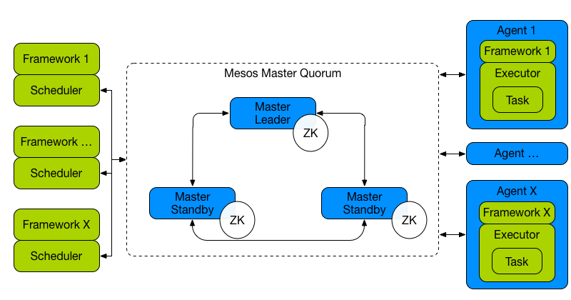
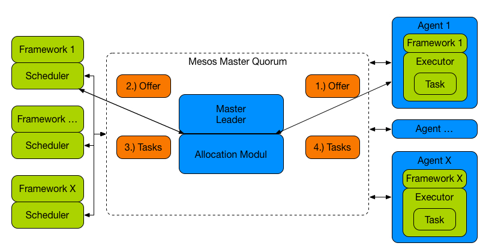

Introduction to Marathon
Johannes M. Scheuermann
Johannes M. Scheuermann
- KIT & Working student
- IT Engineering & Operations @inovex
- Working with new data center technologies
- @johscheuer
Challenges in a data center
- Multiple clusters
- Low resource utilization
- Life cycle
- Forget running VMs
Apache Mesos
- Data center operating system
- Abstracts CPU, memory, ...
- Provides API for resource management
- Production proven

Architecture

Resource offer

„Developers will ask for an API not for a VM to run their software“
– Anonymous
What is Marathon?
- Obviously not the sport :)
- Cluster-wide init and control system
- Cgroups, Docker, LXC
- Supports SSL and basic auth
- Per default HA (with zookeeper)